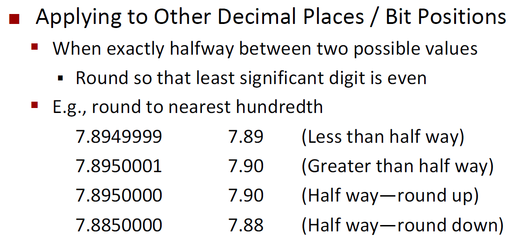
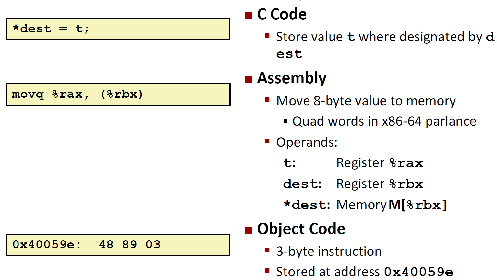
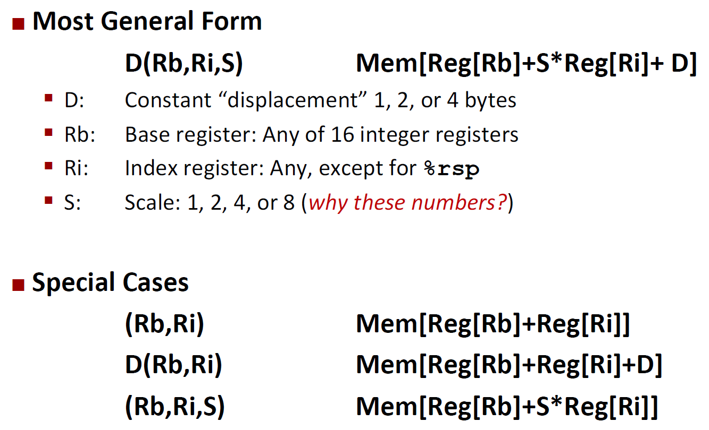
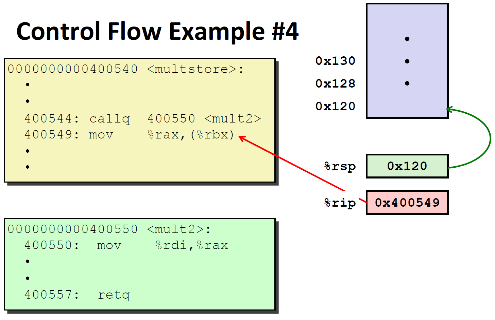
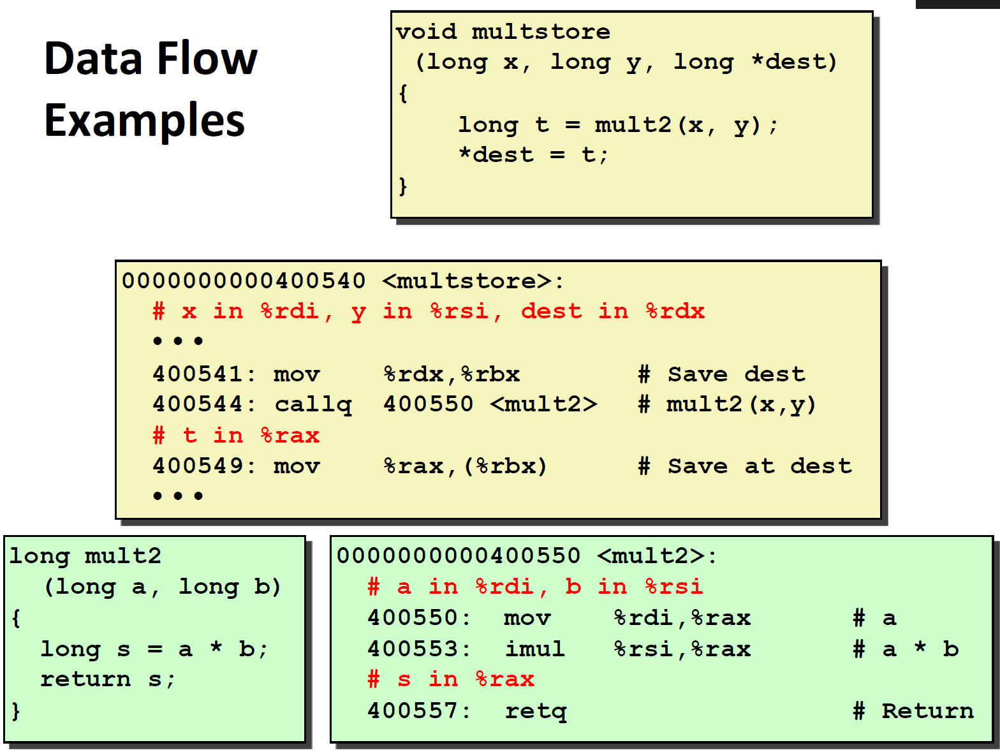
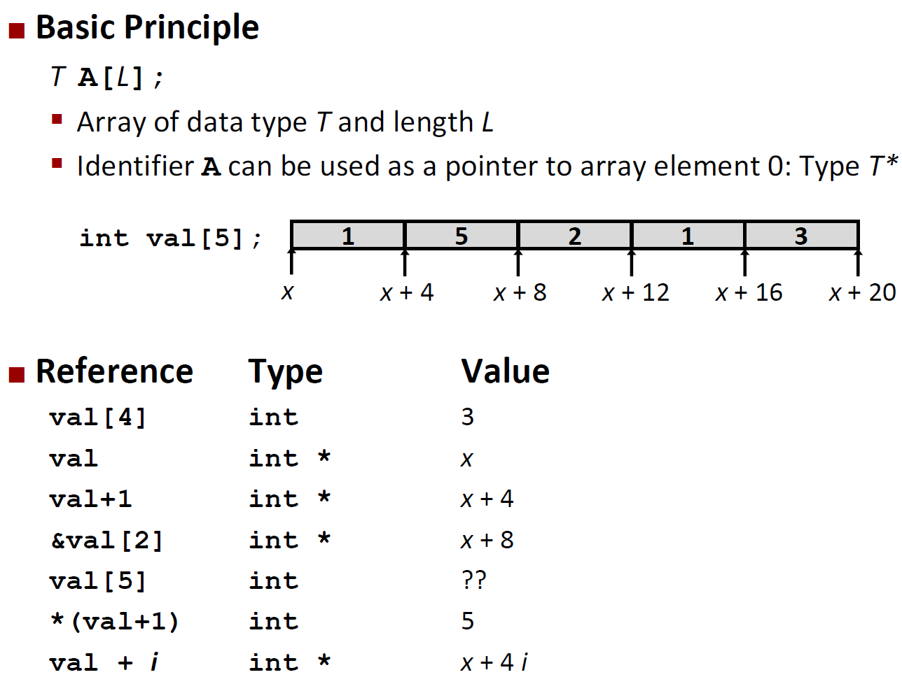
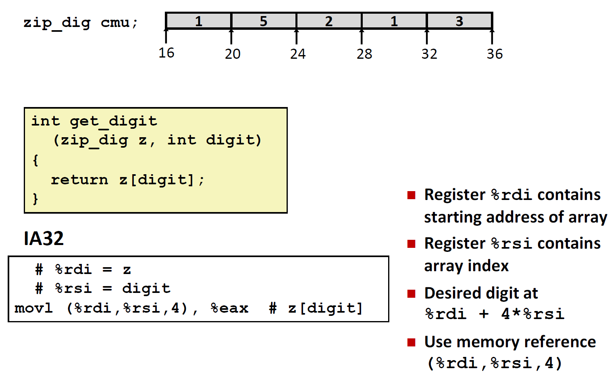
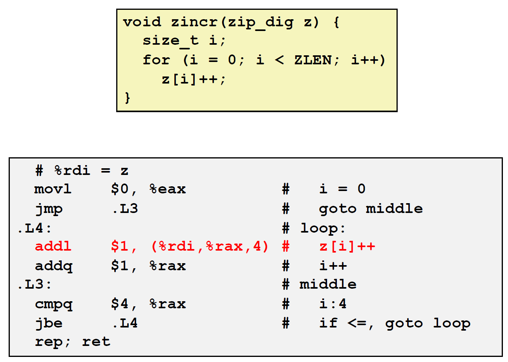
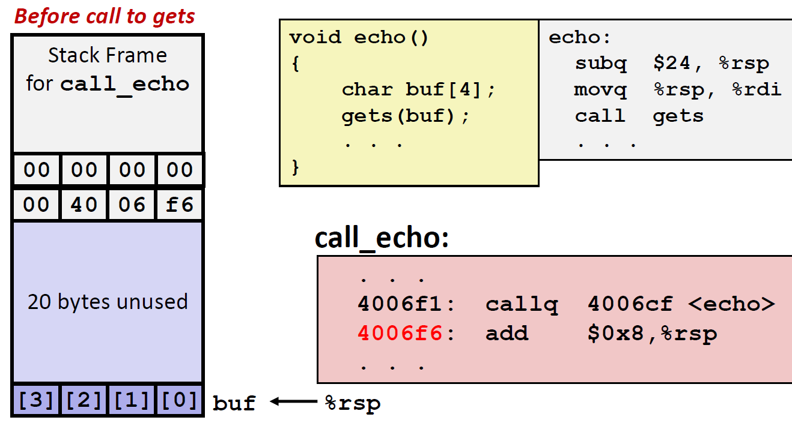

System Programming midterm
Abstraction is good but don’t forget reality
Abstraction have limits
- Especially in the presence of bugs
- Need to understand details of underlying implementations
Useful outcomes from taking system programming
- Able to find and eliminate bugs efficiently
- Able to understand and tune for program performance
Ints are not integers, Floats are not reals

Computer arithmetic
Does not generate random values
Cannot assume all usual mathematical properties
- Due to finiteness of representations
- Integer operations satisfy ‘ring’ properties
- Commutativity, associativity, distributivity
- Floating point operations satisfy ‘ordering’ properties
- Monotonicity, values of signs
Important issues for compiler writers and serious application programmers.
You’ve got to know assembly
Understanding assembly is key to machine-level execution model
- Behavior of programs in presence of bugs
- High-level language models break down
- Tuning program performance
- Understand optimizations done / not done by the compiler
- Understanding sources of program inefficiency
- Implementing system software
- Compiler has machine code as target
- Operating systems must manage process state
Memory matters - Random Access Memory is an unphysical abstraction
Memory is not unbounded
- It must be allocated and managed
- Many applications are memory dominated
Memory referencing bugs especially pernicious
- Effects are distant in both time and space
Memory performance is not uniform
- Cache and virtual memory effects can greatly affect program performance
- Adapting program to characteristics of memory system can lead to major speed improvements
Memory referencing errors
- C and C++ do not provide any memory protection
- out of bounds array refences
- Invalid pointer values
- Abuses of malloc / free
- Can lead to nasty bugs
- Whether or not bug has any affect depends on system and compiler
- Action at a distance
- Corrupted object logically unrelated to one being accessed
- Effect of bug may be first observed long after it is generated
There’s more to performance than asymptotic complexity
Constant factors matter too
And even exact op count does not predict performance
- Easily see 10:1 performance range depending on how code written
- Must optimize at multiple levels - algorithm, data representations, procedures, and loops
Must understand system to optimize performance
- how programs compiled and executed
- how to measure program performance and identify bottlenecks
- how to improve performance without destroying code modularity and generality
Hierarchical memory organization
Performance depends on access patterns
- Including how step through multi-dimensional array
Computers do more than execute programs
They need to get data in and out
- I/O system critical to program reliability and performance
They communicate with each other over networks
- Many system-level issues arise in presence of network
- Concurrent operations by autonomous processes
- Coping with unreliable media
- Cross platform compatibility
- Complex performance issues
Everything is bits
Each bits is 0 or 1
By encoding / interpreting sets of bits in various ways
Why bits? - Electronic implementation
- Easy to store with bistable elements
- Reliability transmitted on noisy and inaccurate wires
Encoding byte values
Byte = 8 bits
Example data representations
Boolean algebra
Algebraic representation of logic
- Encode true as 1 and false as 0
General boolean algebras
Operate on bit vectors
- Operations applied bitwise
All of the properties of boolean algebra apply
Bit-level operations in C
Contrast: Logic operations in C
Shift operations
Integers
Encoding integers
Numeric ranges
Values for different word sizes
Unsigned & signed numeric values
Equivalence
- same encodings for nonnegative values
Uniqueness
- Every bit pattern represents unique integer value
- Each representable integer has unique bit encoding
Can inverting mappings
Mapping between signed & unsigned
Mappings between unsigned and two’s complement numbers: Keep bit representations and reinterpret

Relation between signed & unsigned
Signed vs. unsigned in C
Constants
- By default are considered to be signed integers
- Unsigned if have “U” as suffix
Casting
- Explicit casting between signed & unsigned same as U2T and T2U
- Implicit casting also occurs via assignment and procedure calls
Casting surprises
Expression evaluation
- If there is a mix of unsigned and signed in single expression, signed values implicitly cast to unsigned
- Including comparison operations
Casting signed <-> unsigned: basic rules
- Bit pattern is maintained
- but reinterpreted
- can have unexpected effects: adding or subtracting \(2^{w}\)
- Expression containing signed and unsigned int
intis cast tounsigned!!
Sign extension
Task
- Given w-bit signed integer x
- Convert it to w + k-bit integer with same value
- Converting from smaller to larger integer data type
- C automatically performs sign extension
Expanding (short int to int)
- Unsigned: zeros added
- Signed: sign extension
- Both yield expected result
Truncating (unsigned to unsigned short)
- Unsigned / signed: bits are truncated
- Result reinterpreted
- Unsigned: mod operation
- Signed: similar to mod
- For small numbers yield expected behavior
Unsigned addition
Standard addition function
- ignores carry output
Implementations modular arithmetic
Two-complement addition

Multiplication
Maintaining exact results
- would need to keep expanding word size with each product computed
- is done in software, if needed
Power-of-2 multiply with shift
Arithmetic: Basic rules
Addition:
- Unsigned / signed: normal addition followed by truncate, same operation on bit level
- Unsigned - addition mode \(2^{w}\)
- Mathematical addition + possible subtraction of \(2^{w}\)
- Signed - modified addition mode \(2^{w}\) (result in proper range)
- Mathematical addition + possible addition or subtraction of \(2^{w}\)
Multiplication:
- Unsigned / signed: normal multiplication followed by truncate, same operation on bit level
- Unsigned - multiplication mod \(2^{w}\)
- Signed - modified multiplication mod \(2^{w}\) (result in proper range)
Why should I use unsigned?
Representations in memory, pointers, strings
Byte-oriented memory organization
Programs refer to data by address
- Conceptually, envision it as a very large array of bytes
- An address is like an index into that array
- and, a pointer variable stores an address
System provides private address spaces to each ‘process’
- Think of a process as a program being executed
- So, a program can clobber its own data, but not that of others
Machine words
Any given computer has a ‘word size’
- Nominal size of integer-valued data and of addresses
- Until recently, most machines used 32 bits (4 bytes) as word size
- Limits addresses to 4GB
- Increasingly, machines have 64-bit word size
- Potentially, could have 18EB (exabytes) of addressable memory
- Machines still support multiple data formats
- Fractions or multiples of word size
- Always integral number of bytes
Word-oriented memory organization
Addresses specify byte locations
- Address of first byte in word
- Addresses of successive words differ by 4 (32-bit) or 8 (64-bit)
Byte ordering
Conventions

Representing Strings
Strings in C
- Represented by array of characters
- Each character encoded in ASCII format
- Standard 7-bit encoding of character set
- String should be null-terminated
- Final character = 0
Compatibility
- Byte ordering not an issue
Floating point
Fractional binary numbers

Representable numbers
IEEE Floating point
IEEE Standard 754
Driven by numerical concerns
- Nice standards for rounding, overflow, underflow
- Hard to make fast in hardware
- Numerical analysts predominated over hardware designers in defining standard
Floating point representation
Normalized values
bias = 127
127을 기준으로 0과 255만 제외하고, 소수점 1칸을 움직이고 싶으면 Exp = 128, E = 128 - 172 = 1로 계산
Denormalized values
Special values
Distribution of values

Special properties of the IEEE encoding
FP zero same as Integer zero
- all bits = 0
Can (almost) use unsigned integer comparison
- Must first compare sign bits
- Must consider -0 = 0
- NaNs problematic
- Will be greater than any other values
- What should comparison yield?
- Otherwise OK
- Denorm vs. normalized
- Normalized vs. infinity
Floating point operations: basic idea
Basic idea
- First compute exact result
- Make it fit into desired precision
- Possibly overflow if exponent too large
- Possibly round to fit into
frac
Rounding
Closer look at round-to-even
Default rounding mode
- hard to get any other kind without dropping into assembly
- All other are statistically biased
- Sum of set of positive numbers will consistently be over- or under-estimated

Rounding binary numbers
FP multiplication
Fixing
- If \(M \geq 2\), shift M right, increment E
- If E out of range, overflow
- Round M to fit
fracprecision
Implementation
- Biggest chore is multiplying significands
Floating point addition
Mathematical properties of FP add
Mathematical properties of FP mult
Abelian group
Floating point in C
float - single precision
double - double precision
Conversions / casting
- Casting between
int, float, anddoublechanges bit representation. double / float-> int- Truncates fractional part
- like rounding toward zero
- not defined when out of range or NaN
int -> double- exact conversion, as long as
inthas \(\leq 53\) bit word size
- exact conversion, as long as
int -> float- will round according to rounding mode
Floating point puzzles
Dynamic range (positive-only)
Intel x86 processors
Complex instruction set computer (CISC)
- Many different instructions with many different formats
- but, only small subset encountered with Linux programs
- Hard to match performance of Reduced Instruction Set Computers (RISC)
- In terms of speed. Less so for low power.
Added features
- Instructions to support multimedia operations
- Instructions to enable more efficient conditional operations
- Transition from 32 bits to 64 bits
- More cores
x86 clones: Advanced Micro Devices (AMD)
- a little bit slow, a lot cheaper
- Developed x86-64, their own extension to 64 bits
Definitions
Architecture - (also ISA: Instruction Set Architecture) The parts of a processor design that one needs to understand or write assembly / machine code.
Microarchitecture - Implementation of the architecture
Code forms
- Machine code - The byte-level programs that a processor executes
- Assembly code - A text representation of machine code
Assembly / Machine code view
Programmer-visible state
- PC - Program counter
- address of next instruction
- called ‘RIP’
- Register file
- heavily used program data
- Condition codes
- store status information about most recent arithmetic or logical operation
- used for conditional branching
Memory
- Byte addressable array
- Code and user data
- Stack to support procedures
Turning C into Object code
Compiling into assembly
Assembly characteristics: data types
‘Integer’ data of 1, 2, 4, or 8 bytes
- Data values
- Addresses (untyped pointers)
Floating point data of 4, 8, or 10 bytes
Code - byte sequences encoding series of instructions
No aggregate types such as arrays or structures
- just contiguously allocated bytes in memory
Assembly characteristics: Operations
perform arithmetic function on register or memory data
Transfer data between memory and register
- Load data from memory into register
- Store register data into memory
Transfer control
- Unconditional jumps to / from procedures
- conditional branches
Object code
Machine instruction example

Disassembling object code
Disassembler
objdump -d sum
- useful tool for examining object code
- Analyzes bit pattern of series of instructions
- Produces approximate rendition of assembly code
- Can be run on either a.out (complete executable) or .o file
What can be disassembled?
Anything that can be interpreted as executable code
Disassembler examines bytes and reconstructs assembly source
x86-64 Integer Registers
Some history: IA32 registers
Moving data
movq Source, Dest
movq operand combinations
Simple memory addressing modes
Complete memory addressing modes

Address computation instruction
leaq Src, Dst
Srcis address mode expression- Set
Dstto address denoted by expression
Use
- Computing addresses without a memory reference
- Computing arithmetic expressions of the from \(x + k * y\)
Some arithmetic operations
Processor State (x86-64, Partial)
Condition codes (implicit setting)
Not set by leaq instruction
Explicit setting: Compare
Explicit setting: test
Reading condition codes
SetX Instructions
- Set low-order bytes of destination to 0 or 1 based on combinations of condition codes
- Does not alter remaining 7 bytes
SetX Instructions - set single byte based on combination of condition codes
One of addressable byte registers
- Does not alter remaining bytes
- Typically use
movzblto finish job- 32-bit instructions also set upper 32 bits to 0
Jumping
jX instructions - Jump to different part of code depending on condition codes
Conditional branch example (old style)
Expressing with Goto code
General conditional expression translation (using branches)
Using conditional moves
Conditional move instructions
- Instruction supports:
if (Test) Dest <- Src - Supported in post-1995 x86 processors
- GCC tries to use them
- But, only when known to be safe
Why?
- Branches are very disruptive instruction flow through pipelines
- Conditional moves do not require control transfer
Conditional move example
Bad cases for conditional move
Expensive computations
val = Test(x) ? Hardl(x) : Hard2(x);
- both values get computed
- Only makes sense when computations are very simple
Risky computations
val = p ? *p : 0;
- Both values get computed
- May have undesirable effects
Computations with side effects
val = x > 0 ? x *= 7 : x += 3
- Both values get computed
- Must be side-effect free
Do-while loop example
Do-while loop compilation

General do-while translation
General while translation #1
While loop example

For loop form
For loop -> while loop
For-while conversion
For loop do-while conversion
Switch statement example
Jump table structure

Switch statement example
Assembly setup explanation
Table structure
- each target requires 8 bytes
- base address at
.L4
Jumping
- Direct:
jmp .L8 - Jump target is denoted by label
.L8 - Indirect:
jmp *.L4(, %rdi, 8) - Start of jump table:
.L4 - Must scale by factor of 8 (addresses are 8 bytes)
- Fetch target from effective address
.L4 + x * 8- only for \(0 \leq x \leq 6\)
Jump table
Code blocks (x == 1)
handling fall-through
Code blocks (x == 2, x == 3)
Code blocks (x == 5, x == 6, default)
Mechanisms in procedures
passing control
- To beginning of procedure code
- back to return point
Passing data
- Procedure arguments
- return value
Memory management
- allocate during procedure execution
- deallocate upon return
Mechanisms all implemented with machine instructions
x86-64 implementation of a procedure uses only those mechanisms required
x86-64 stack
region of memory managed with stack discipline
grows toward lower addresses
register %rsp constains lowest stack address
- address of ‘top’ element
x86-64 stack: push
pushq src
- Fetch operand at src
- Decrement
%rspby 8 - Write operand address given by
%rsp

x86-64 stack: pop
popq dest
- Read value at address given by
%rsp - increment
%rspby 8 - store value at dest (must be register)
Code example
Procedure control flow
use stack to support procedure call and return
procedure call: call label
- push return address on stack
- jump to label
return address:
- address of the next instruction right after call
- example from disassembly
Procedure return: ret
- pop address from stack
- jump to address

Procedure data flow
data flow examples

Stack-based languages
languages that support recursion
- code must be ‘reentrant’
- multiple simultaneous instantiations of single procedure
- need some place to store state of each instantiation
- arguments
- local variables
- return pointer
stack discipline
- state for given procedure needed for limited time
- from when called to when return
- callee returns before caller does
stack allocated in frames
- state for single procedure instantiation
call chain example
Stack frame
contents
- return information
- local storage (if needed)
- temporary space (if needed)
management
- space allocated when enter procedure
- set-up code
- includes push by
callinstruction
- deallocated when return
- finish code
- includes pop by
retinstruction

Example
x86-64 / Linux stack frame
Current stack frame (‘top’ to bottom)
- ‘argument build’: parameters for function about to call
- local variables if can’t keep in registers
- saved register context
- old frame pointer (optional)
Caller stack frame
- return address
- pushed by
callinstruction
- pushed by
- arguments for this call
Example: incr
Register saving conventions
when procedure yoo calls who:
yoois the callerwhois the callee
Can register be used for temporary storage?
Conventions
- ‘caller saved’
- caller saves temporary values in its frame before the call
- ‘callee saved’
- callee saved temporary values in its frame before using
- callee restores them before returning to caller
x86-64 Linux register usage

Callee-saved example

Recursion function
Observations about recursion
Handled without special consideration
stack frames mean that each function call has private storage
- saved registers & local variables
- saved return pointer
Register saving conventions prevent one function call from corrupting another’s data
- Unless the C code explicitly does so - buffer overflow
Stack discipline follows call / return pattern
- If P calls Q, then Q returns before P
- Last-In, First-Out
Also works for mutual recursion
- P calls Q; Q calls P
x86-64 Procedure summary
Array allocation
Basic principle
T A[L];
- array of data type T and length L
- contiguously allocated region of L *
sizeof(T)bytes in memory

Array access

Array example


Multidimensional (nested) arrays
Nested array example

N * N Matrix code
16 * 16 matrix access
n * n matrix access
Structure representation
Structure represented as block of memory
- big enough to hold all of the fields
Fields ordered according to declaration
- Even if another ordering could yield a more compact representation
Compiler determines over size + positions of fields
- Machine-level program has no understanding of the structures in the source code
Generating pointer to structure member
Flowwing linked list
Structures & alignment
Alignment priciples
Aligned data
- primitive data type requires K bytes
- Addres must be multiple of k
- required on some machines; advised on x86-64
Motivtaion for aligning data
- memory accessed by (alinged) chunks of 4 or 8 bytes (system dependent)
- inefficient to load or store datum that spans quad word boundaries
- virtual memory trickier when datum spans 2 pages
Compiler
- inserts gaps in structure to ensure correct alignment of fields
Specific cases of alignment (x86-64)
Satisfying alignment with structures
Meeting overall alignment requirement
arrays of structures
Accessing array elements

Saving space
x86-64 Linux Memory layout
x86-64 example addresses
Memory referencing bug example
Such problems are a BIG deal
generally called a ‘buffer overflow’
- When exceeding the memory size allocated for an array
Why a big deal?
- It’s the #1 technical cause of security vulnerabilities
- #1 overall cause is social enginerring / user ignorance
Most common form
- Unchecked lengths on string inputs
- Particularly for bounded character arrays on the stack
- sometimes referred to as stack smashing
String library code
Vulnerable buffer code
Buffer overflow disassembly
Buffer overflow stack

Code injection attacks
Exploits based on buffer overflows
Buffer overflow bug can allow remote machines to execute arbitrary code on victim machines
Distressingly common in real programs
What to do about buffer overflow attacks
- avoid overflow vulnerabilities
- employ system-level protections
- have compiler use ‘stack canaries’
Avoid overflow vulnerabilities in code
System-level protections can help

Stack canaries can help
Protected buffer disassembly
Setting up canary
Checking canary
Return-oriented programming attacks
Challenge (for hackers)
- stack randomization makes it hard to predict buffer location
- marking stack nonexecutable makes it hard to insert binary code
Alternative strategy
- use existing code
- string together fragments to achieve oeverall desired outcome
- does not overcome stack canaries
Construct program from gadgets
- sequence of instructions ending in
ret- Encoded by single byte
0xc3
- Encoded by single byte
- code positions fixed from run to run
- code is executable